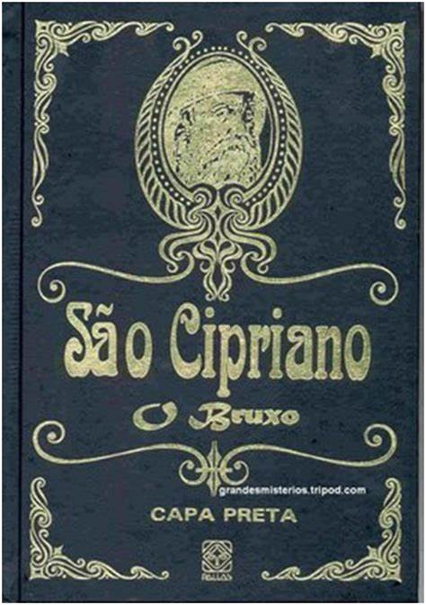
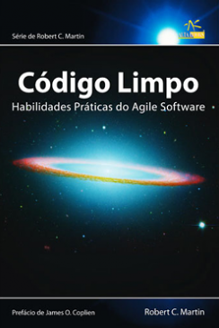

Sebo leitor digital e um site com um acervo ainda pequeno de livros e quadrinhos. Faca bom proveito dos livros disponiveis no site.
Clique na capa do livro para ler a descricao.
Autor: Frank Herbert
Autor: Walter Isaacson

Autor: Sao Cipriano

Autor: Robert C. Martin